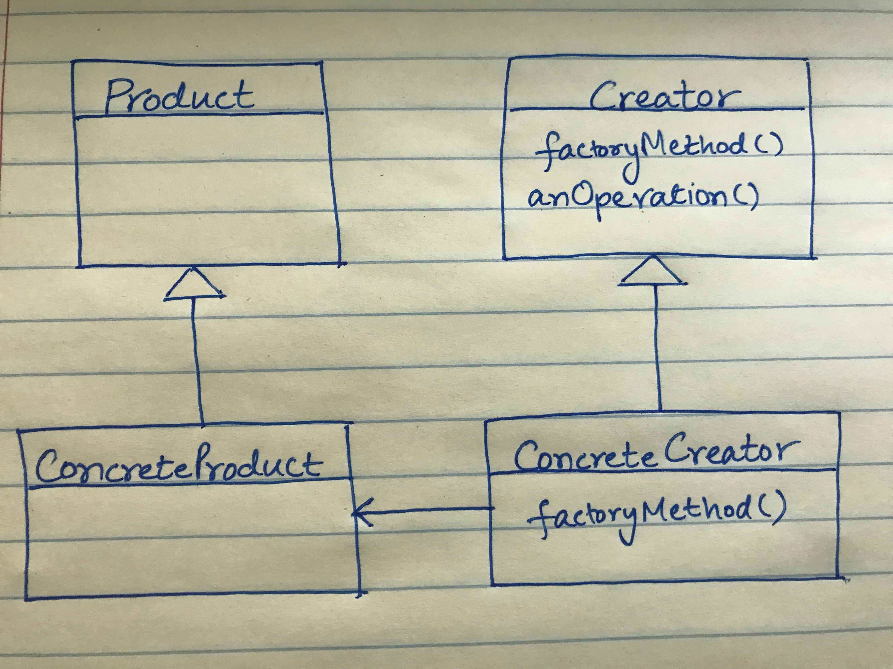
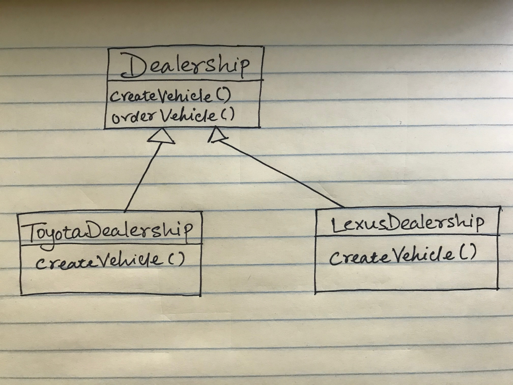
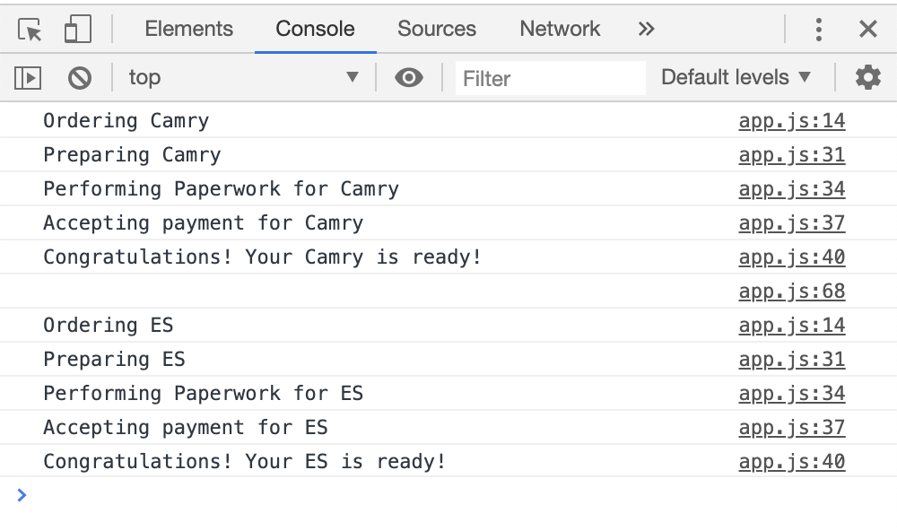

This article demonstrates how Factory Method design pattern can be implemented in Java and Javascript.
Definition
Design Patterns: Elements of Reusable Object-Oriented Software defines the Factory Method as follows:
Define an interface for creating an object, but let sub-classes decide which class to instantiate. Factory Method lets a class defer instantiation to subclasses.
Structure
- Product: Defines the interface of objects the factory method creates.
- ConcreteProduct: Implements the Product interface.
- Creator: Declares the factory method, which returns an object of type Product.
- ConcreteCreator: Overrides the factory method and returns an instance of ConcreteProduct.
Example - A Car Dealership
Our car dealership application lets a customer order a vehicle from a car dealership. Let's assume that the dealership sells Toyota vehicles and has a well defined workflow of tasks that take place when a customer orders a new vehicle. Now the owner of the dealership has decided to open a new dealership to sell Lexus vehicles. The order processing workflow has to remain consistent between the dealerships. We also have to make sure that correct choices of vehicles are presented for Toyota and Lexus brands.

Dealership class is the Creator that declares createVehicle() Factory Method. Dealership delegates the
responsibility of creating an appropriate Vehicle object to ToyotaDealership and
LexusDealership ConcreteCreator sub-classes.
Vehicle is the Product interface (an abstract class in our case). Corolla, Camry, Highlander,
ES, IS, and RX are ConrcreteProduct classes that implement the Vehicle interface.
Java
Dealership.java
abstract public class Dealership {
public void orderVehicle(String type) {
Vehicle vehicle = createVehicle(type);
System.out.println("Ordering Vehicle..." + vehicle.getType());
vehicle.prepareVehicle();
vehicle.performPaperwork();
vehicle.acceptPayment();
vehicle.deliver();
}
abstract public Vehicle createVehicle(String type);
}
Dealership class declares the abstract createVehicle() method.
orderVehicle() method defines the order processing workflow. It uses createVehicle() method to get a Vehicle object.
As shown below, ToyotaDealership and LexusDealership classes override the createVehicle() method to instantiate and return an appropriate
Vehicle object based on the type of vehicle requested.
ToyotaDealership.java
public class ToyotaDealership extends Dealership {
public Vehicle createVehicle(String type) {
switch(type.toLowerCase()) {
case "corolla": return new Corolla();
case "camry": return new Camry();
case "highlander": return new Highlander();
default: {
System.out.println("No Such Model available");
System.exit(0);
return null;
}
}
}
}LexusDealership.java
public class LexusDealership extends Dealership {
public Vehicle createVehicle(String type) {
switch(type.toLowerCase()) {
case "es": return new ES();
case "is": return new IS();
case "rx": return new RX();
default: {
System.out.println("No Such Model available");
System.exit(0);
return null;
}
}
}
}As shown below, Vehicle is an abstract class. It defines various operations that are performed on a vehicle at the time or ordering.
Vehicle.java
abstract class Vehicle {
String type;
public String getType() {
return type;
}
public void prepareVehicle() {
System.out.println("Preparing Vehicle..." + type);
System.out.println("Perform Inspection...");
System.out.println("Wash the vehicle...");
System.out.println("Top up the fuel...");
System.out.println("Install any accessories - all weather mats, trunk mats, paint protection, etc.");
}
public void performPaperwork() {
System.out.println("Perform Paperwork for..." + type);
System.out.println("Prepare Invoice...");
}
public void acceptPayment() {
System.out.println("Accept payment...");
}
public void deliver() {
System.out.println("Congratulations! Your " + type + " is ready for you!");
}
}Following are the concrete sub-classes that extend the Vehicle class.
class Corolla extends Vehicle {
public Corolla() {
type = "corolla";
}
}
class Camry extends Vehicle {
public Camry() {
type = "camry";
}
}
class Highlander extends Vehicle {
public Highlander() {
type = "highlander";
}
}
class ES extends Vehicle {
ES() {
type = "ES";
}
}
class IS extends Vehicle {
IS() {
type = "IS";
}
}
class RX extends Vehicle {
RX() {
type = "RX";
}
}
Application.java contains the main() method
public class Application {
public static void main(String[] args) {
Dealership dealership = new ToyotaDealership();
dealership.orderVehicle("camry");
}
}In the code above, we are creating an instance of ToyotaDealership class and placing an order for Camry. The output looks like this:
amit$ java Application
Ordering Vehicle...camry
Preparing Vehicle...camry
Perform Inspection...
Wash the vehicle...
Top up the fuel...
Install any accessories - all weather mats, trunk mats, paint protection, etc.
Perform Paperwork for...camry
Prepare Invoice...
Accept payment...
Congratulations! Your camry is ready for you!Javascript
Now let us see how Factory Method design pattern can be implemented in Javascript.
To keep the implementation simple, I have stayed away from the newer javascript syntax and built-in functions available in ES5 and above.
The following code defines the Dealership function constructor. createVehicle argument is a function that gets passed to Dealership. orderVehicle() method is defined on Dealership's prototype.
function Dealership(createVehicle) {
this.createVehicle = createVehicle;
}
Dealership.prototype.orderVehicle = function(type) {
var vehicle = this.createVehicle(type);
if (vehicle === null) {
console.error('No such vehicle available - ' + type);
return;
}
console.log('Ordering ' + vehicle.getType());
vehicle.prepareVehicle();
vehicle.performPaperwork();
vehicle.acceptPayment();
vehicle.deliver();
};The following code defines the Vehicle function constructor and prototype methods.
function Vehicle(type) {
this.type = type;
}
Vehicle.prototype = {
getType: function() {
return this.type;
},
prepareVehicle: function() {
console.log('Preparing ' + this.type);
},
performPaperwork: function() {
console.log('Performing Paperwork for ' + this.type);
},
acceptPayment: function() {
console.log('Accepting payment for ' + this.type);
},
deliver: function() {
console.log('Congratulations! Your ' + this.type + ' is ready!');
},
};
The following code creates toyotaDealership and lexusDealership objects of type Dealership.
var toyotaDealership = new Dealership(function(type) {
if (type.toLowerCase() === 'corolla') {
return new Vehicle('Corolla');
} else if (type.toLowerCase() === 'camry') {
return new Vehicle('Camry');
} else if (type.toLowerCase() === 'highlander') {
return new Vehicle('Highlander');
} else {
return null;
}
});
var lexusDealership = new Dealership(function(type) {
if (type.toLowerCase() === 'es') {
return new Vehicle('ES');
} else if (type.toLowerCase() === 'is') {
return new Vehicle('IS');
} else if (type.toLowerCase() === 'rx') {
return new Vehicle('RX');
} else {
return null;
}
});Now we can order a vehicle by calling orderVehicle() method on toyotaDealership and lexusDealership objects.
toyotaDealership.orderVehicle('camry');
console.log('');
lexusDealership.orderVehicle('es');Here's the output
Summary
Factory Method encapsulates object creation by letting the sub-classes decide what objects to create. In the above example, Dealership
defines the process of ordering a vehicle but has no knowledge of the type of vehicle being ordered. The responsibility of creating a vehicle is delegated to the sub-classes.